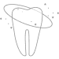

Extraction
Getting rid of problems
Sometimes removing the tooth is the best pathway to a healthy mouth. We aim to make this process as easy and gentle as possible.
What to expect
-
 Multiple 2 Hr appointments
Multiple 2 Hr appointments -
 Oral
anesthetic use
Oral
anesthetic use -
 Possible minor discomfort
Possible minor discomfort
-
 Mild
postoperative bleeding
Mild
postoperative bleeding -
 Post
operative discomfort
Post
operative discomfort -  Avoid eating until numbness wears off
What it is
This is typically a solution of last resort
Removal of a tooth is recommended when
- Tooth is broken beyond restorability
- Tooth is infected
- There is significant bone loss around the tooth
- It is wisdom tooth
Because wisdom teeth can pose significant health risks later in life it is recommended to have the removed fairly early on for the following reasons:
- Healing capacity is extremely high
- Bone is flexible and not fragile
- High risk of complications if not removed timely
Leaving wisdom teeth in can cause significant health complications later in life such as:
- Bone loss around 2nd molars leading to tooth loss
- 2nd molar tooth decay
- Soft tissue infections
- Cyst and tumors associated with wisdom tooth presence
How it is accomplished
There is a certain amount of fear that accompanies this procedure for the specific reason is that there is anticipation of pain. Our advanced techniques make it possible to circumvent the discomfort and the anxiety in order to have a low stress, comfortable visit.
During the procedure we will walk you through of what to expect and what is normal and not normal to feel. We will equip you to appropriately handle the operative stress and communicate any discomfort you may be experiencing.
For certain cases it is necessary to have the added benefit of sedation, we offer multiple varieties of sedation that can benefit event the most anxious of our patients. The types of sedation offered are:
- Laughing gas sedation This is a nitrous oxide gas that is administered to patients who want to feel more comfortable during a procedure, however anxiety reduction with this method can range from minimal to moderate.
- Medication sedation This is a medication that is administered to patients 30-60 minutes before the visit. This medication can cause other side effects such as drowsiness and dizziness, however anxiety reduction with this method can range from minimal to substantial depending on the persons physiology. These patients require a driver to be present after the appointment.
- Combination of Laughing gas and anxiety reducing medications The combination of both methods has an additive effect in reducing anxiety that ranges from moderate to profound. Some patients have reports experiencing absence of memory while under the influence of these sedation methods, other side effects include drowsiness and dizziness. These patients require a driver to be present after the appointment.
- IV Sedation This method of sedation offers an ideal level of anxiety reduction as well as loss of memory while under the influence of sedation medications. These patients require a driver to be present after the appointment.
After Removal of Tooth
- Keep pressure on the wound
- Stay away from spicy foods
- Stay away from crunchy foods
- Stay away from strenuous physical activity
- Stay away from smoking
- Take pain medications before anesthetic wears off
Post operative complications
- Dry Socket This is a common complication associated with the loss of clot within the socket. A symptom of dry socket is radiating pain that doesn't diminish with any kind of pain medication regiment. Other symptoms present are unpleasant taste and smell emanating from the affected area. Although benign, dry socket is extremely unpleasant, call your dental provider to manage this complication.
- Bleeding This is a common complication that is treated with some pressure on the wound. If bleeding is slowing down but is taking time to form a clot we ask our patients to bite on a teabag of black tea. The tannic acid in the black tea will encourage a clot to form faster. If other concerns are present please call your dental provider.